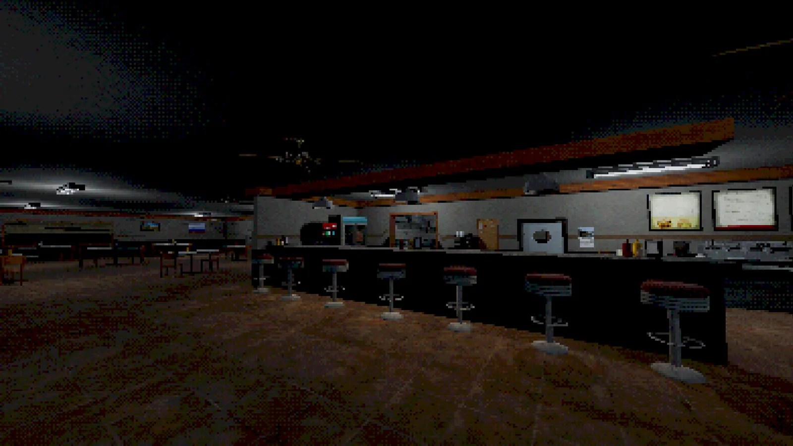
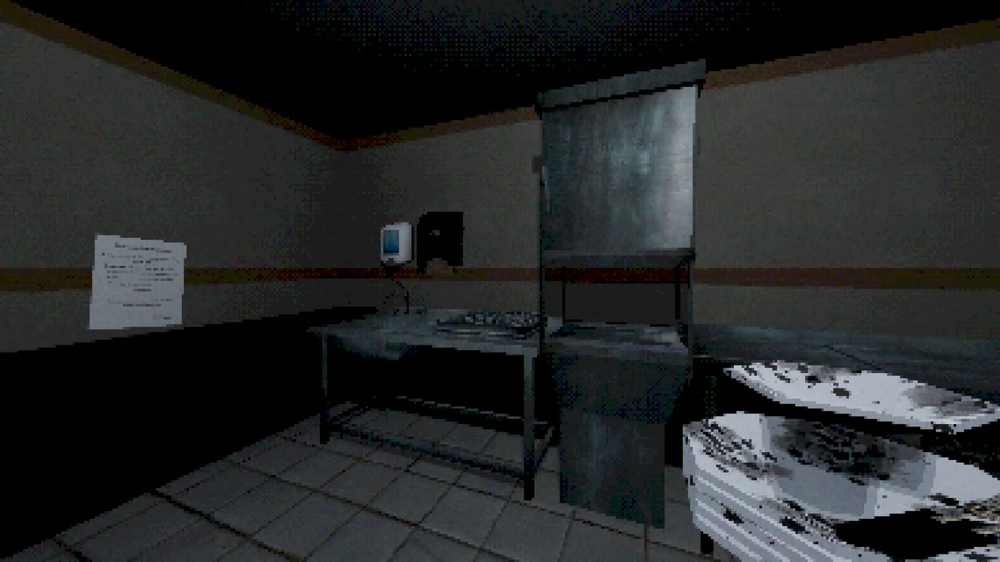
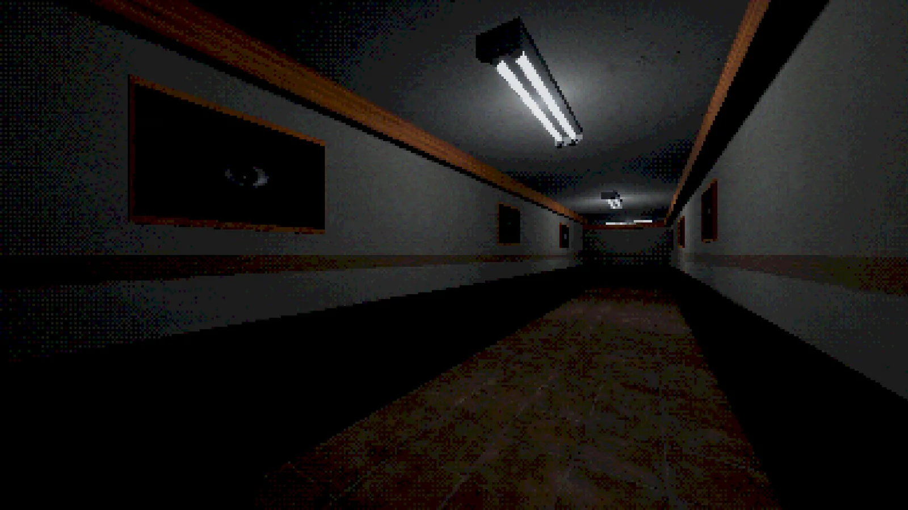

A small experiment in unpredictable horror.
Lakefront Restaurant is a short experimental first-person horror game built around randomized events and environmental interaction. The project gave me room to test how much tension can come from systems rather than scripted sequences alone.

Making the environment matter.
One of the central systems involved interacting with objects in the restaurant, including the dishwasher. These interactions were designed to make the environment feel more like a space the player could understand and manipulate.
Randomized events were layered on top of that structure so that players could not simply memorize a single sequence of scares hitting the goal of implimenting "randomized horror".


Letting players expose the problems.
Playtesting helped reveal which events were effective, which were too predictable, and where players became confused. That feedback informed changes and eventually contributed to the Director's Cut which changed puzzles, story elements, and more.
What I took forward.
The project reinforced how useful small, focused experiments can be. Instead of trying to build a huge horror game, I could isolate a few ideas, test them, and learn from the results. While the game was a success with players and praised for its PS1-inspired graphics, atmosphere, and mechanics, some criticized its slow pacing and simplistic story.